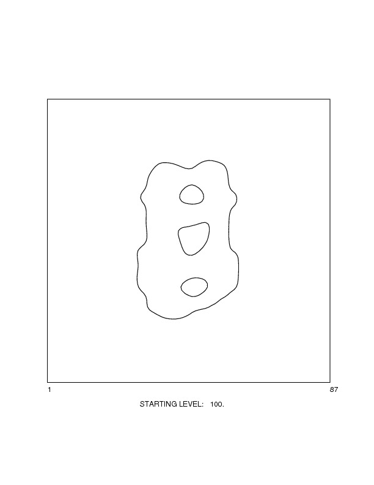

| INPUT IMAGE . |
|---|
 |
| savpad_nik_sli_45 |
| . |
|---|
| . |
| Image of Postscript plot |
|---|
|  |
| co.jpg |
| .OPERATION: | CO | ; Contour image |
| .INPUT FILE NAME OR TEMPLATE: | savpad_nik_sli_45 | ; Image (input) |
| .STARTING & ENDING CONTOUR LEVELS: | 0.5 | ; Starting & ending contour levels |
| .CONTOUR LEVEL INCREMENT (USE VALUE > END FOR ONE LEVEL): | 0.5 | ; Contour level increment (one level) |
| .OUTPUT FILE: | co.ps | ; Plot (output) |
| .PRINT POSTSCRIPT FILE NOW (Y/N): | N |
|
|
|